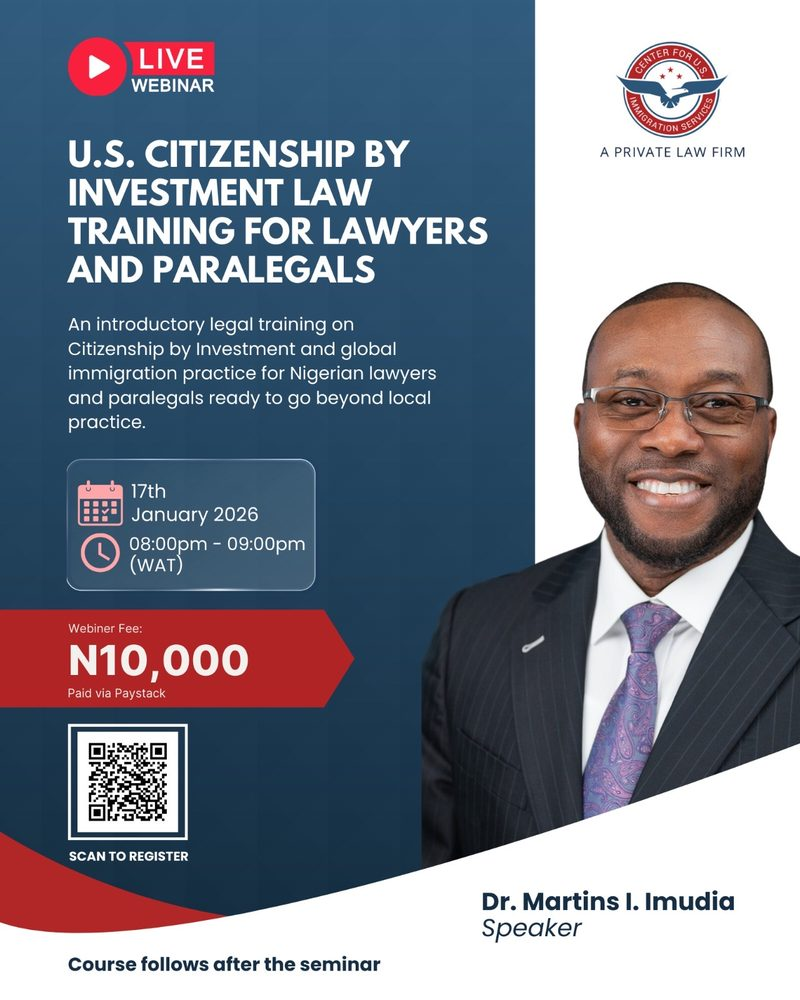

U.S. Immigration training webinar
Center For U.S Immigration Services
A paid digital campaign I led to promote a U.S. Immigration training webinar, with messaging aligned to current legal updates.
- Handled ad targeting and ongoing optimization.
- Tracked performance and exported registration leads.
- Worked with internal stakeholders so the messaging matched legal updates.
Results in 14 days
- 94.9Kviews
- 61.6Kunique viewers
- 1.2Kengagements
- 1,000+landing page visits